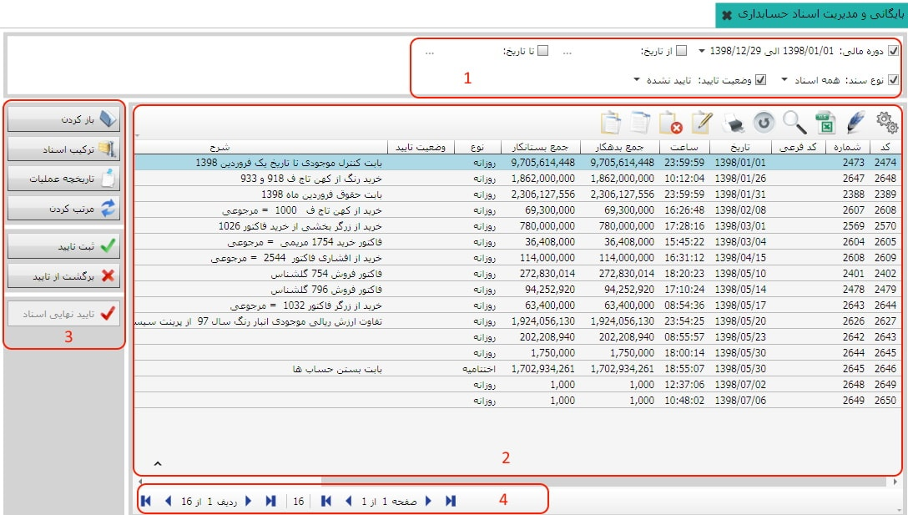
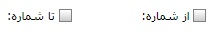
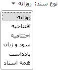
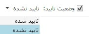
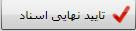
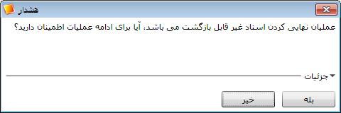

اگر سندی را از لیست اسناد حسابداری انتخاب کنید و روی این گزینه کلیک کنید، سند مورد نظر باز شده و می توانید فرم آن را مشاهده کنید.
در این بخش شما می توانید تمامی اسناد صادر شده از سوی سیستم ها را با فیلتر های مختلف مشاهده کنید، این فیلتر ها شامل تعیین دوره ی مالی، بازه ی زمانی، نوع سند و وضعیت تایید می باشد، همچنین تایید اسناد، برگشت از تایید و تایید نهایی اسناد نیز در این بخش صورت می گیرد. تصویر زیر صفحه ی بایگانی و مدیریت اسناد حسابداری را نمایش می دهد.
همان طور که مشاهده می کنید تصویر بالا شامل چهار کادر می باشد که در زیر به شرح هر یک می پردازیم :
کادر شماره 1:
اگر دوره های مالی مختلف داشته باشید می توانید با
انتخاب دوره مالی مورد نظر از این قسمت لیست
اسناد صادر شده در آن دوره را در کادر شماره ی دو مشاهده کنید.
برای آن که بتوانید فقط اسناد صادر شده در یک بازه زمانی خاصی را مشاهده کنید از این قسمت روی مربع ها کلیک کنید سپس بازه تاریخی خود را انتخاب کنید تا اسناد مربوط به بازه تاریخی نمایش داده شوند، برای تعیین تاریخ روی نقطه چین کلیک کنید.
با استفاده از این گزینه می توانید شماره ی اسناد را فیلتر کنید و فقط اسنادی که شماره ی آنها فیلتر شده را ببینید.

با استفاده از این قسمت تعیین می کنید که سیستم لیست کدام یک از
انواع سندهای حسابداری را نشان دهد. البته با
انتخاب همه اسناد می توانید همه ی اسنادی که
در حسابداری صادر شده اند را مشاهده کنید.

با کلیک روی مربع مربوط به این گزینه سیستم اسناد را بر اساس
وضعیت تایید آن ها نمایش می دهد، اگر«تایید شده»
را انتخاب کنید اسنادی که تایید شده اند در کادر شماره ی دو نشان
داده می شوند و اگر«تایید نشده» را انتخاب کنید
اسنادی که تایید نشده اند نشان داده می شوند.
کادر شماره 2:
بعد از این که از کادر شماره ی یک دوره ی مالی، بازه ی زمانی، نوع سند و
و وضعیت تایید را تعیین کردید در کادر شماره ی دو لیست اسناد مورد نظر خود را
مشاهده خواهید کرد، همچنین در این لیست اطلاعات مربوط به اسناد
از قبیل:
کد دوره، کد بایگانی، شماره، کد فرعی، تاریخ ثبت سند،
ساعت ثبت سند، نوع سند، وضعیت تایید، شرح سند،
سیستم صادر کننده و نام ایجاد کننده سند قرار دارد.
کادر شماره ی سه شامل هفت کلید می شود با این کلید ها می توانید به روی اسناد عملیات مختلفی انجام دهید که در زیر به شرح هر یک می پردازیم:
اگر سندی را از لیست اسناد
حسابداری انتخاب کنید و روی این گزینه کلیک کنید، سند
مورد نظر باز شده و می توانید فرم آن را مشاهده کنید.
با استفاده از این کلید می توانید چند سند را با هم ترکیب کنید
برای ترکیب کردن سند ها با هم ابتدا باید آنها را از حالت تایید
خارج کنید، بعد در سند های تایید نشده باید سند های خود را بیابید
در این مرحله کلید
ctrl
را نگه دارید و روی سند های مورد نظر خود کلیک کنید
سپس کلید ترکیب اسناد را بزنید.
در صورتی که خواستید تاریخچه مربوط به سندی را مشاهده کنید
پس از انتخاب آن سند روی این گزینه کلیک کنید تا
اطلاعات مربوط به آن سند را مشاهده کنید.
به این ترتیب از لحظه
ایجاد سند تا آخرین تغییرات در آن قابل مشاهده است.

با کلیک روی این گزینه می توانید اسناد را بر حسب تاریخ صدورشان
مرتب کنید توجه داشته باشید برای مرتب سازی سند ها نباید در وضعیت تایید شده باشند
و اگر اسنادی در وضعیت تایید بودند ابتدا باید برگشت از تایید شوند.

اسناد حسابداری پس از ثبت در بخش مدیریت و بایگانی اسناد حسابداری
رویت می شوند، در این مرحله مدیر حسابداری به بررسی صحت ثبت اسناد می پردازد
و بعد از بررسی لازم سند را به وسیله ی این کلید تایید میکند.
اسنادی را که قبلا تایید
شده اند به کمک این گزینه می توان از حالت تایید در آورد.

اداره دارایی برای تایید نرم افزار الزام می دارد که اسناد
حسابداری از یک تاریخ معین به بعد قابل ویرایش و حذف کردن
نباشند، لذا لازم است در زمان تعیین شده اسناد حسابداری
صادر شده را تایید نهایی کنید. برای این کار روی کلید
« تایید نهایی اسناد» کلیک کنید تا صفحه زیر باز شود:
تایید نهایی اسناد بر حسب تاریخ صدور اسناد می باشد. شروع بازه تاریخی همیشه تاریخ اولین روز دوره مالی می باشد و تاریخ دوم نشان می دهد که اسناد تا چه تاریخی تایید نهایی می شوند. همچنین در تایید نهایی اسناد، بازه های تاریخی مشخص شده باید پیوسته باشند به طور مثال وقتی اسناد یک ماه اول دوره مالیتان را تایید نهایی کرده اید بار دیگر که می خواهید اسناد صادر شده در بازه تاریخی دیگری را تایید نهایی کنید شروع بازه تاریخی انتخابی باید اولین روز ماه دوم دوره مالیتان باشد.(همان طور که در شکل بالا مشاهده می کنید وقتی کلید تایید نهایی اسناد را انتخاب می کنید سیستم به طور پیش فرض کل دوره مالی را به عنوان بازه تاریخی در نظر می گیرد). پس از انتخاب بازه تاریخی روی کلید تایید کلیک کنید تا هشدار شکل زیر ظاهر شود:
ّ
 توجه به هشدار بالا بسیار مهم است زیرا
پس از تایید نهایی اسناد در بازه تاریخی مشخص شده،
اسناد صادر شده در آن بازه دیگر قابل ویرایش و یا
حذف شدن نیستند و همچنین در آن بازه تاریخی دیگر امکان
ثبت سند جدید وجود ندارد. (به عنوان مثال اگر اسناد
کل دوره مالی را تایید نهایی کنید دیگر در آن دوره
هیچ سند حسابداری جدیدی را نمی توانید صادر کنید.)
پس در تایید نهایی اسناد باید نهایت دقت را به عمل
بیاورید. پس از کلیک روی گزینه « بله » اسناد بازه
تاریخی مشخص پس از پیغام زیر تایید نهایی می شوند.
توجه به هشدار بالا بسیار مهم است زیرا
پس از تایید نهایی اسناد در بازه تاریخی مشخص شده،
اسناد صادر شده در آن بازه دیگر قابل ویرایش و یا
حذف شدن نیستند و همچنین در آن بازه تاریخی دیگر امکان
ثبت سند جدید وجود ندارد. (به عنوان مثال اگر اسناد
کل دوره مالی را تایید نهایی کنید دیگر در آن دوره
هیچ سند حسابداری جدیدی را نمی توانید صادر کنید.)
پس در تایید نهایی اسناد باید نهایت دقت را به عمل
بیاورید. پس از کلیک روی گزینه « بله » اسناد بازه
تاریخی مشخص پس از پیغام زیر تایید نهایی می شوند.

شکل بالا در اثر تایید نهایی اسناد از تاریخ 1392/01/01 تا 1392/04/15 ظاهر شده است.